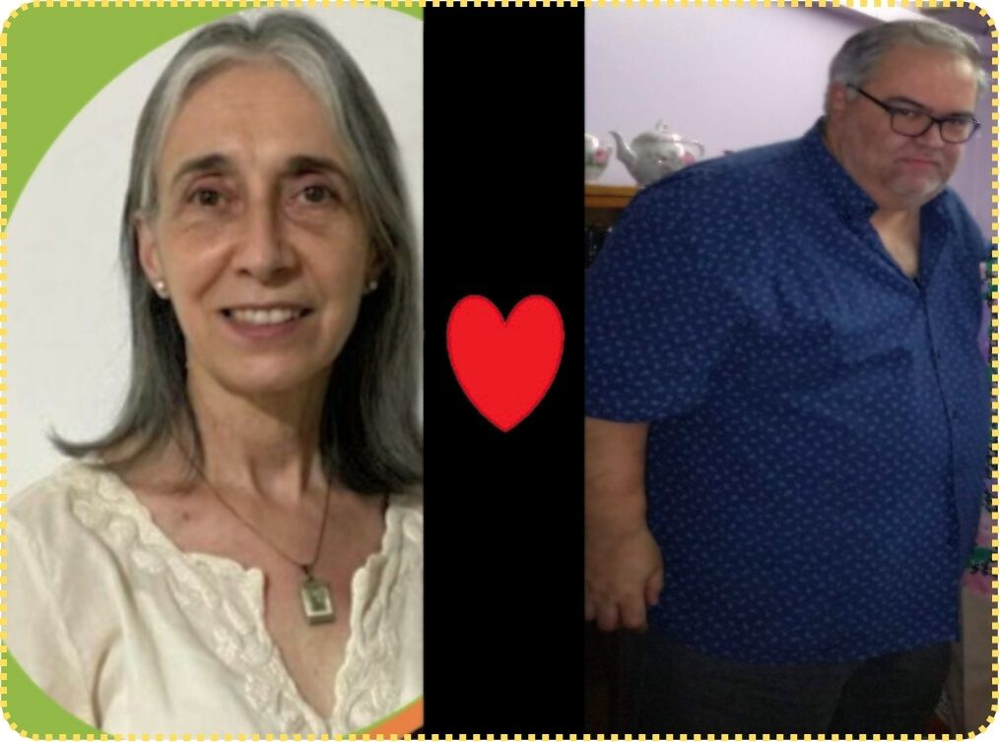

Mi Perspectiva:
La interacción entre la humanidad, la ciencia, la tecnología y la naturaleza representa un crisol de posibilidades y desafíos en nuestra era moderna, siendo un tema fascinante y complejo. La tecnología ha tenido un impacto profundo en nuestras vidas, transformando la manera en que vivimos, trabajamos y nos relacionamos. Desde mejoras en la salud y la comunicación hasta la automatización de la productividad y la inteligencia artificial, la tecnología ha sido una fuerza impulsora de cambios tanto positivos como desafiantes en nuestra sociedad. Sin embargo, este avance continuo no solo ha mejorado la calidad de vida de millones, sino que también ha planteado cuestiones fundamentales, desafíos éticos y filosóficos, sobre nuestra relación con el entorno natural y con nosotros mismos.
La rápida evolución tecnológica nos ha llevado a considerar escenarios futuristas como los que se exploran en Cyberpunk 2077 y otras obras distópicas, donde la fusión entre la biología humana y la tecnología es una realidad palpable, como por ejemplo la hipotética integración del metal entre la carne humana. Este escenario explora hasta qué punto podríamos llegar en la fusión de la biología humana con mejoras tecnológicas, desde implantes cibernéticos para mejorar habilidades físicas o mentales hasta dispositivos que permitan una conexión directa con sistemas informáticos. Se abre un debate profundo sobre la naturaleza humana y los límites de la tecnología. ¿Hasta qué punto estamos dispuestos a modificar nuestro cuerpo con implantes cibernéticos o prótesis avanzadas? Esta cuestión no solo afecta nuestra identidad personal, sino también nuestra relación con el entorno natural que nos rodea e incluso nos desafían a pensar los límites al modificar nuestra biología con implantes cibernéticos o mejoras genéticas para superar nuestras capacidades físicas y mentales. A medida que contemplamos estas posibilidades, avanzando hacia un futuro cada vez más dominado por la inteligencia artificial y la biotecnología, también debemos reflexionar sobre cómo estos avances podrían afectar nuestra conexión con el entorno natural y con las leyes que rigen la vida en la Tierra, emergiendo la intrigante pregunta: ¿Está la carne humana diseñada para integrarse con el metal?
La naturaleza adaptativa del ser humano se refleja no solo en nuestra capacidad para integrar tecnología en nuestro cuerpo, sino también en cómo interactuamos, respondemos y nos adaptamos a nuestro entorno natural. A medida que exploramos nuevas fronteras tecnológicas y horizontes momentáneamente limitantes, es crucial considerar cómo estas innovaciones afectarán a nuestra conexión con la naturaleza y cómo podrían contribuir a la sostenibilidad ambiental y a la preservación de los ecosistemas que sustentan la vida en nuestro planeta. Los avances en la neurociencia y la biomecánica están llevando a desarrollos que podrían permitir mejoras significativas en las capacidades humanas.
Surgen además cuestiones éticas y sociales complejas. ¿Cómo afectaría a la identidad personal la incorporación de partes artificiales? ¿Qué implicaciones tendría para la igualdad social y económica si algunos individuos tienen acceso a mejoras tecnológicas que otros no pueden permitirse? ¿Quién tendrá acceso a estas tecnologías avanzadas y cómo se regulará su uso, garantizando que se respeten los principios éticos y los derechos individuales? ¿Cómo afectaría esto a la identidad humana y a la privacidad? Estas son cuestiones que no solo afectan a individuos y comunidades enteras, sino también que deben abordarse de manera cuidadosa y reflexiva para preservar la integridad de nuestro entorno natural. La frontera entre la biología y la máquina plantea dilemas éticos sobre la privacidad de los datos biométricos, la autonomía personal y el potencial para la discriminación basada en las mejoras tecnológicas. Además, nacen las preocupaciones sobre la dependencia excesiva de la tecnología y la vulnerabilidad ante posibles fallos o ciberataques. La velocidad del desarrollo tecnológico plantea la pregunta inevitable: ¿Estamos preparados para un futuro donde la línea entre lo orgánico y lo artificial se desdibuje por completo?
Además, el potencial uso de estas tecnologías como armas plantea desafíos adicionales en términos de seguridad y regulación, siendo muy importante la exploración y debate de éstos temas desde diversas perspectivas para entender mejor las implicaciones y tomar decisiones basadas en cómo avanzar sobre este campo moderno.
La exploración de estos temas no solo nos desafía a considerar los límites de la biología y la tecnología, sino también a reflexionar sobre qué significa ser humano en un mundo cada vez más dominado por la innovación tecnológica. Es fundamental que consideremos cómo podemos equilibrar los avances científicos y tecnológicos con el respeto por la naturaleza y por nuestra propia humanidad. Este equilibrio no solo definirá el curso de nuestro desarrollo como sociedad, sino también nuestra capacidad para preservar y valorar la belleza y la diversidad del mundo social y natural que nos rodea. Reflexionar sobre cómo podemos equilibrar los avances científicos y tecnológicos con el respeto por la naturaleza y por nosotros mismos como seres humanos no solo definirá nuestro futuro, sino también nuestra relación con el mundo que habitamos.
En este sentido, el transhumanismo es un movimiento que propone el uso de tecnologías avanzadas para mejorar y potenciar las capacidades humanas. Esta filosofía se centra en la idea de que los humanos pueden y deben trascender sus limitaciones biológicas mediante la aplicación de la ciencia y la tecnología. Se busca alcanzar una vida más larga y saludable, mejorar nuestras habilidades cognitivas y físicas, y, en última instancia, redefinir lo que significa ser humano. Algunos de los campos más relevantes dentro del transhumanismo incluyen la inteligencia artificial, la biotecnología, la nanotecnología, y la ciencia de materiales. Los defensores del transhumanismo argumentan que estas tecnologías tienen el potencial de resolver muchos de los problemas actuales de la humanidad, como enfermedades incurables, el envejecimiento, y las limitaciones físicas. Sin embargo, también plantean importantes cuestiones éticas y filosóficas sobre la identidad humana, la desigualdad, y el acceso equitativo a estas mejoras tecnológicas. Puede representar una oportunidad emocionante y desafiante. Debemos abordar este movimiento con una mente abierta pero crítica, asegurándonos de que su desarrollo beneficie a toda la humanidad y no solo a unos pocos privilegiados. Es una llamada a la acción para que comencemos a moldear nuestro destino como especie, utilizando todas las herramientas a nuestra disposición.
En honor de Nilda Caamaño y Alejandro Igartúa -fallecidos en la Pandemia- quienes, con sus valores, enseñanzas y un profundo amor por su profesión, me inspiran cada día.
